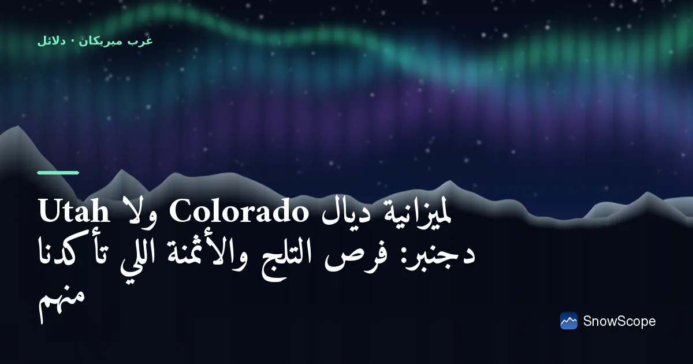
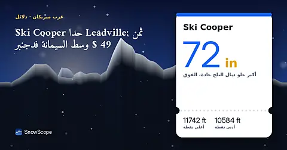

Utah ولا Colorado لميزانية ديال دجنبر: فرص التلج والأثمنة اللي تأكدنا منهم
البدايات ديال دجنبر تفضل يوتاه؛ قبل الكريسماس الفرق يقرب. Brighton Resort فيوتاه عندها 37 بوصة (94 سم) تلج عادي فالوسط ديال الجبل فاليوم 15 ديال دجنبر، مع احتمالات قوية ديال 20 بوصية ولا أكتر. Wolf Creek فكولورادو تبدا أرق بـ 34 بوصية (87 سم) لاكن تكون فراسي أعلى وتبني أكتر بسرعة خلال الشهر. أثمان التذاكر وموثوقية التلج مختلفة بزاف بين الجنتين.
شوف توقعات التلج مباشرة ديال Utah and Colorado فالتطبيق ديال SnowScopeالعلو ديال التلج، التنبيهات والخريطة 3D، فابور.
الميزة ديال البدايات ديال دجنبر: Brighton تربح
فاليوم 1 ديال دجنبر، الوسط ديال الجبل ديال Brighton عندو تلج عادي 28 بوصية (70 سم)، بينما Wolf Creek فنفس اليوم عندها 24 بوصية (60 سم). هاد الفرق ديال 4 بوصية يعكس موسم التلج المبكر ديال يوتاه والارتفاع المنخفض ديال البدايات. بحلول اليوم 15 ديال دجنبر الفرق يقرب لاكن يبقا مهم: Brighton عندها 37 بوصية (94 سم) ضد Wolf Creek بـ 34 بوصية (87 سم).
الموثوقية مهمة اللي تحجزي من بداية. فاليوم 15 ديال دجنبر، Brighton توصل لـ 20 بوصية ولا أكتر فـ 89 % ديال الشتوات اللي فاتو؛ Wolf Creek تعطيك 72 %. إذا الشتا لين (واحد من عشرة)، Brighton بقا تاركة 20 بوصية (52 سم)، لاكن Wolf Creek تنزل لـ 5 بوصية فقط (12 سم). بالنسبة لرحلة قوية فالبدايات ديال دجنبر، Brighton مخاطرها أقل.

أسبوع الكريسماس يقرب الفرق
بحلول اليوم 25 ديال دجنبر الجنتين توصلو لنفس الحد. الوسط ديال الجبل ديال Brighton تلجو التلج العادي 48 بوصية (122 سم) مع 98 % ديال الشتوات اللي فوق 20 بوصية. Wolf Creek توصل 42 بوصية (107 سم) مع 78 % ديال الشتوات اللي فوق 20 بوصية. الفرق ديال الارتفاع يظهر: Wolf Creek بـ ارتفاع أعلى (11,010 قدم ضد 9,600 قدم) تخزن تلج أكتر خلال دجنبر.
بحلول يوم السنة الجديدة، المواقع تبدل شوية. Brighton توصل 52 بوصية (133 سم) و Wolf Creek توصل 46 بوصية (118 سم). الجنتين موثوقات. بالنسبة لرحلة أسبوع الأعياد، أي منهما تخدم، لاكن Wolf Creek تعطيك شعور الجبل مع تلج أرق فالبدايات ديال دجنبر باش تجنبي.
الاتجاهات خلال الشتوات 15 ديال اللي فاتو
Brighton حفاظت على عمق التلج ديالها فدجنبر بشكل ثابت نسبيا. الوسط ديالها فاليوم 15 ديال دجنبر انتقل من 50 بوصية (128 سم) فالشتوات 15 الأولى لـ 27 بوصية (68 سم) فالشتوات 15 الأخيرة—انخفاض حقيقي، لاكن بقا فوق المتوسط. النسبة ديال الشتوات بـ 20 بوصية ولا أكتر نزلت من 100 % لـ 73 %.
الاتجاه ديال Wolf Creek أكثر درامية. الوسط ديالها فاليوم 15 ديال دجنبر انخفض من 55 بوصية (140 سم) لـ 24 بوصية (60 سم)، والنسبة اللي فوق 20 بوصية نزلت من 87 % لـ 67 %. الشتا اللي فات كان لين بزاف: فقط 9 بوصية (23 سم) فاليوم 15. هاد الحاجة مهمة إذا كنتي تخطيطي حول التلج 'العادي'؛ السمعة ديال Brighton حفاظت ديالها أحسن من احتمالات البدايات ديال دجنبر ديال Wolf Creek.
أثمان التذاكر والأيام ديال الذروة
Brighton تبدا بـ 72 دولار إذا شرياتي من باش (التسعير الديناميكي يعطيك مكافأة على الحجز المبكر). ما عندها رسوم ذروة؛ واحد تمن يغطي الشهر باش. Wolf Creek تخلي الأثمان ثابتة بـ 96 دولار فالأيام العادية و 110 دولار فأيام الذروة. فدجنبر، الذروة تجري من 20 لـ 23 ومن 26 لـ 31، فبقا تقتصدي 14 دولار فاليوم قبل اليوم 20 وفيوم الكريسماس إيف ولا يوم الكريسماس.
بالنسبة لرحلة 2 يوم فالبدايات ديال دجنبر، Wolf Creek تكلفك 192 دولار؛ التسعير الديناميكي ديال Brighton يبدا أقل لاكن يعتمد على شنو الوقت اللي تشري فيه. بالنسبة لأسبوع الكريسماس، التسعير ديال الذروة ديال Wolf Creek (220 دولار بـ 2 يوم) ضد التسعير الثابت ديال Brighton (144 دولار بـ 2 يوم) يفضل Brighton. التذاكر متعددة الأيام عند Wolf Creek تعطيك قيمة أحسن لكل تذكرة إذا كنتي تتزحلقي فأيام الذروة على كل حال.
شنو الأسبوع اللي عندو احتمالات الأحسن؟
فـ Brighton، الأسبوع من 14 لـ 20 ديال دجنبر عندو تلج قوي (على الأقل 20 بوصية بالوسط ديال الجبل) فـ 96 % ديال الشتوات، وترتفع لـ 98 % فأسبوع الكريسماس. البدايات ديال دجنبر (من 30 نوفمبر لـ 6 ديال دجنبر) تنزل لـ 80 % احتمالات، بقا محكومة لاكن ما محتومة.
فـ Wolf Creek، البدايات ديال دجنبر أرق: فقط 59 % ديال الشتوات اللي فاتو تشوف تلج قوي فالأسبوع الأول ديال دجنبر. بحلول 14 لـ 20 ديال دجنبر ترتفع لـ 76 %، وبحلول أسبوع الكريسماس لـ 78 %. إذا حنتي لازم تحجزي البدايات ديال دجنبر، Brighton الرهان الأمن. إذا تقدري تحجزي من الوسط لـ نهايات ديال دجنبر، الجنتين موثوقات.
نصايح للي كيتزلجو
- بالنسبة لتخطيط رحلة قبل اليوم 15 ديال دجنبر؟ Brighton عندها احتمالات أعلى ديال التلج وما عندها تسعير ذروة. شري التذاكر أونلاين من باش قدر الإمكان باش تخلي الأحسن ديال التمن.
- إذا حنتي لازم تحجزي البدايات ديال دجنبر عند Wolf Creek، شوفي خريطة التلج ديال SnowScope من باش. واحد من عشرة شتوات شوف فقط 5 بوصية فاليوم 15؛ فترة جافة فالمنطقة اللي تهب الريح منها قد تؤثر على مسالك سيرا خوان.
- بالنسبة لأسبوع الكريسماس (بعد اليوم 20 ديال دجنبر)، الجنتين عادي عندهم 40+ بوصية بالوسط ديال الجبل. تسعير الذروة ديال Wolf Creek (110 دولار/يوم) تخلي التمن الثابت ديال Brighton أحسن إلا إذا كنتي تفضلي الارتفاع الأعلى والمنحدرات الأقل ازدحاما.
- قبل ما تسوقي لأي منهما ديال المحطات، شيبي السلاسل ولا رسي الإطارات الشتوية؛ الجنتين مواقعهم فالتضاريس ديال الجبل مع قوانين التجاذب، خصوصا فطرق الاقتراب.
- بالنسبة لتزحلق خارج البيست، شوفي النشرة الرسمية ديال الانهيارات: مركز يوتاه ديال الانهيارات بالنسبة لـ Brighton، مركز معلومات كولورادو ديال الانهيارات بالنسبة لـ Wolf Creek.
على هاد الأرقام
العلو ديال التلج فالمحطات هو أكثر تلج فالجهة الفوقانية فالتاريخ المكتوب؛ هادو تقديرات لمنطقة، ماشي قياس فنقطة وحدة. التوقعات يمكن تتبدل. ديما شوف النشرة الرسمية ديال الانهيارات قبل ما تخرج من البيست.
كيفاش تستاشهد بهاد المقال
للبحث، التعليم ولا الصحافة: الأرقام والرسومات تقدر تعاود تخدم بيهم بحرية تحت CC BY 4.0 مع هاد الاستشهاد.
SnowScope (2026), Utah ولا Colorado لميزانية ديال دجنبر: فرص التلج والأثمنة اللي تأكدنا منهم, https://snowscope.app/blog/ar/2026/11/utah-vs-colorado-december-ski-budget-2026.html, تشاف ف 2026-11-14
SnowScope (Atlas Labs). (2026, November 14). Utah ولا Colorado لميزانية ديال دجنبر: فرص التلج والأثمنة اللي تأكدنا منهم. SnowScope snow reports. https://snowscope.app/blog/ar/2026/11/utah-vs-colorado-december-ski-budget-2026.html
BibTeX
@misc{snowscope2026utahvscoloradodecembersk,
author = {{SnowScope (Atlas Labs)}},
title = {Utah ولا Colorado لميزانية ديال دجنبر: فرص التلج والأثمنة اللي تأكدنا منهم},
year = {2026},
month = nov,
howpublished = {\url{https://snowscope.app/blog/ar/2026/11/utah-vs-colorado-december-ski-budget-2026.html}},
note = {Published 2026-11-14 20:11 UTC; accessed 2026-11-14}
}· CC BY 4.0 · الطريقة، الداتا والأدوات →
تابع Utah and Colorado
فابور: ميساج ملي يجي التلج، والتوقعات كل صباح.
تقارير أخرى ديال التلج

Beaver Mountain كاتعطي تذاكر بـ سعر ثابت 75 دولار بـلا حساب زيادة فـ أيام الازدحام. البداية ديال ديسمبر غالبا كاتكون رقيقة؛ جرب النص ديال الشهر أو بعد هكا متاع التلج يكون أكتر موثوق.

محطة التلج العالية فـ كولورادو تحتفظ بتذكرة المصعد للبالغين يوم الأسبوع بـ 49 دولار للموسم 2026-27؛ العلو ديال التلج فـ وسط الجبل يوصل لـ 66 سم بـ نص ديسمبر فـ الشتاء العادي. المعطيات من 13 نونبر 2026.